GFW 原理指南
开篇
GFW具有重大的社会意义。无论是正面的社会意义，还是负面的意义。无论你是讨厌，还是憎恨。它都在那里。在可以预见的将来，墙还会继续存在。我们要学会如何与其共存。我是一个死搞技术的，就是打算搞技术到死的那种人。当我读到“西厢计划”的博客上的这么一段话时，我被深深的触动了。不是为了什么政治目的，不是为了什么远大理想，仅仅做为一个死搞技术的人显摆自己的价值，我也必须做些什么。博客上的原话是这么写的：
作为个搞技术的人，我们要干点疯狂的事。如果我们不动手，我们就要被比我们差的远的坏技术人员欺负。这太丢人了。眼前就是，GFW这个东西，之前是我们不抱团，让它猖狂了。现在咱们得凑一起，想出来一个办法让它郁闷一下，不能老被欺负吧。要不，等到未来，后代会嘲笑我们这些没用的家伙，就象我们说别人“你怎么不反抗？”
我把翻墙看成一场我们与GFW之间的博弈，是一个不断对抗升级的动态过程。目前整体的博弈态势来讲是GFW占了绝对的上风。我们花费了大量的金钱（买VPS买VPN），花费大量时间（学习各种翻墙技术），而GFW只需要简单发几个包，配几个路由规则就可以让你的心血都白费。
GFW并不需要检查所有的上下行流量中是不是有不和谐的内容，很多时候只需要检查连接的前几个包就可以判断出是否要阻断这个连接。为了规避这种检查，我们就需要把所有的流量都通过第三方代理，还要忍受不稳定，速度慢等各种各样的问题。花费的是大量的研究的时间，切换线路的时间，找出是什么导致不能用的时间，当然还有服务器的租用费用和带宽费用。我的感觉是，这就像太极里的四两拨千斤。GFW只需要付出很小的成本，就迫使了我们去付出很大的反封锁成本，而且这种成本好像是越来越高了。
这场博弈的不公平之处在于，GFW拥有国家的资源和专业的团队。而我们做为个体，愿意花费在翻墙上的时间与金钱是非常有限的。在竞争激烈的北上广深，每天辛苦忙碌的白领们。翻墙无非是为了方便自己的工作而已。不可能在每天上下班从拥挤的地铁中挤出来之后再去花费已经少得可怜的业余时间去学习自己不是翻墙根本不需要知道的名词到底是什么意思。于是乎，我们得过且过。不用Google也不会死，对不对。SSH加浏览器设置，搞一搞也就差不多能用就行啦。但是得过且过也越来越不好过了。从最开始的HTTP代理，到后来的SOCKS代理，到最近的OpenVPN，一个个阵亡。普通人可以使用的方式越来越少。博弈的天平远远不是平衡的，而是一边倒。
GFW用技术的手段达到了四两拨千斤的作用。难道技术上就没有办法用四两拨千斤的方法重新扭转这一边倒的局面吗？
办法肯定是有的。我能想到的趋势是两个。第一个趋势是用更复杂的技术，但是提供更简单的使用方式。简单的HTTP代理，SOCKS明文代理早已阵亡。接下来的斗争需要更复杂的工具。无论是ShadowSocks还是GoAgent都在向这个方向发展。技术越复杂，意味着普通人要学习要配置的成本就越高。每个人按照文档，在自己的PC上配置ABC的方式已经不能满足下一阶段的斗争需要了。我们需要提升手里的武器，站在一个更高的平台上。
传统的配置方式的共同特点是终端配置。你需要在你的PC浏览器上，各种应用软件里，手机上，平板电脑上做各种各样的配置。这样的终端配置的方式在过去是很方便的。别人提供一个代理，你在浏览器里一设置就好用了。但是在连OpenVPN都被封了的今天，这种终端配置的方式就大大限制了我们的选择。缺点是多方面的：
- 翻墙的方式受到终端支持的限制。特别是手机和平板电脑，不ROOT不越狱的话，选择就非常有限了。
- 终端种类繁多，挂一漏万。提供翻墙的工具的人不可能有精力来测试支持所有种类的终端。
- 如果家里有多个笔记本，还有手机等便携设备使用起来就很不方便。躺在床上要刷Twitter的时候，才发现手机的里的OpenVPN帐号已经被封了，新的那个只配置在了电脑里。
- 最主流的终端是Windows的PC机。但是在Windows上控制底层网络的运作非常不方便。给翻墙工具的作者设置了一个更高的门槛。
- 终端一般处于家庭路由器的后面。大多数直穿的穿墙方式都很难在这种网络环境下工作正常。
把翻墙工具做到路由器上就可以达到实现更复杂的翻墙技术，同时提供极其简单的使用体验。但是路由器的缺陷也是非常明显的。传统的路由器刷OpenWRT等可以定制的第三方系统有如下缺点：
- 便携不方便，路由器大部分没有电池，也不方便放在包里
- 相比在电脑上装一个软件试试好不好使，额外购买专门用来翻墙的路由器未免试用成本也太高了。如果没有人愿意尝试，更加不会有人来使用。
- 路由器安装软件不方便。笔者花了大量时间研究OpenWRT的USB刷机方式。虽然技术上有所突破，但是仍然感觉不适合普通人操作。
- 硬件受限。路由器的CPU都很慢。内存非常小。如果不是用C来编写应用，速度会非常慢。极大地抬高了开发成本。流行的翻墙工具GoAgent和shadowsocks的最初版本都是Python的。
有没有既可以获得路由器的好处，又克服了其缺点的解决方案呢？答案是肯定的。手机做为路由器就可以。目前fqrouter已经推出了Android版本，把手机变成了翻墙路由器。一方面，完成了平台的跃升，从终端翻墙变为了路由器翻墙。另外一方面，因为手机的便携，无需额外设备，安装软件简单，而且硬件强大完胜了常规意义上的路由器。使用手机做为路由器之后：
- 翻墙方式不再受到终端的限制。只要能接入路由器，就可以翻墙。
- 提供翻墙工具的人不需要测试所有的终端是不是支持。
- 多种终端可以同时共享一个路由器。无需重复配置。
- 路由器基于的Linux操作系统给翻墙工具的作者提供了极大的便利，新的工具可以更容易地被实现出来。
- 提供了一定的直穿的可能性。
- iPhone, Windows Phone等设备不需要越狱，也可以通过翻墙路由器享受到shadowsocks等更高级的翻墙工具。
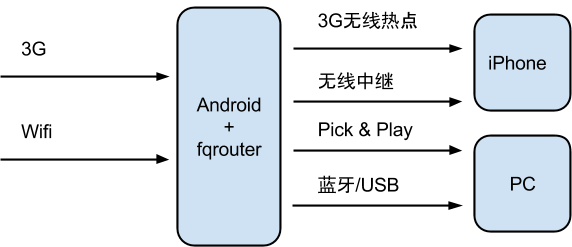
运行在Android上的翻墙工具fqrouter已经在Google Play上架了
这是趋势一，平台的提升。第二个趋势是去中心化。我相信未来的趋势肯定不是什么境外敌对势力出于不可告人的目的给我们提供翻墙方式。未来的趋势是各自为战的，公开贩卖的各种翻墙服务会被封杀殆尽。我们要确保的底线是，做为个人，在拥有一台国外服务器，然后有一定技术能力的情况下，能够稳定无忧的翻墙。
在我们能够保证独善其身的前提下，才有可能怎么去达则兼善天下。才有可能以各自为圆心，把服务以P2P的方式扩散给亲朋好友使用。即便是能够有这样的互助网络建立起来，也肯定是一种去中心化的，开源的实现。只有遍地开花，才能避免被连根拔起。
前面谈到路由器刷第三方固件对于个人来说不是理想的翻墙路由器的实现方式。但是固定部署的路由器却是理想的P2P节点。P2P的一个简化版本是APN，也就是把代理放在国内，然后iPhone等可以简单地使用HTTP未加密方式使用代理。这种部署方式就比较适合刷在固定部署的路由器上。个人可以在自己家里的路由器上部署了代理，然后无论走到哪里都可以通过家里的路由器代理上网。使用路由器固定部署P2P节点的好处是P2P网络可以有更多的稳定接入点。这些刷了OpenWRT等第三方系统安装了P2P节点程序的路由器不会是普通人玩得转的。其意义更多是有技术实力的志愿者，提供自己的家庭路由器，以换得其他方面的方便。
实现一个P2P的网络的难点有三个：
- 代理服务器的容量有限。传统的代理服务器是无法负载很多人同时用1080P看youtube的，因为带宽不够。不要说免费的P2P网络，就是很多付费的代理服务，也无法满足容量要求。
- 中心服务器被封IP。TOR做为著名的P2P网络，其主要问题就是要接入其网络需要连接一个中心服务器。这些服务器的IP数量是有限的。GFW会尽一切力量找到这些IP，然后封IP。
- P2P意味着索取与奉献。人人都想这索取，为什么会有人奉献？如果没有一个等价交换做为社区的基础，这个社区是无法长久的。
目前仍然没有理想的P2P翻墙方式出现。但是这是fqrouter的努力方向。
中心化的翻墙方式，特别是商业贩卖的翻墙服务注定难逃被捕杀殆尽的命运。具有光明未来的翻墙方式必然是去中心化的，松散的，自组织的P2P的。
全面学习GFW
GFW会是一个长期的存在。要学会与之共存，必须先了解GFW是什么。做为局外人，学习GFW有六个角度。渐进的来看分别是：
首先我们学习到的是WHAT和WHEN。比如说，你经常听到人的议论是“昨天”，“github”被封了。其中的昨天就是WHEN，github就是WHAT。这是学习GFW的最天然，最朴素的角度。在这个方面做得非常极致的是一个叫做greatfire的网站。这个网站长期监控成千上万个网站和关键词。通过长期监控，不但可以掌握WHAT被封锁了，还可以知道WHEN被封的，WHEN被解封的。
接下来的角度是WHO。比如说，“方校长”这个人名就经常和GFW同时出现。但是如果仅仅是掌握一个两个人名，然后像某位同志那样天天在twitter上骂一遍那样，除了把这个人名骂成名人之外，没有什么特别的积极意义。我更看好这篇文章“通过分析论文挖掘防火长城(GFW)的技术人员”的思路。通过网络上的公开信息，掌握GFW的哪些方面与哪些人有关系，这些合作者之间又有什么联系。除了大家猜测的将来可以鞭尸之外，对现在也是有积极的意义的。比如关注这些人的研究动态和思想发展，可以猜测GFW的下一步发展方向。比如阅读过去发表的论文，可以了解GFW的技术演进历史，可以从历史中找到一些技术或者管理体制上的缺陷。
再接下来就是WHY了。github被封之后就常听人说，github这样的技术网站你封它干啥？是什么原因促成了一个网站的被封与解封的？我们做为局外人，真正的原因当然是无从得知的。但是我们可以猜测。基于猜测，可以把不同网站被封，与网络上的舆情时间做关联和分类。我们知道，方校长对于网路舆情监控是有很深入研究的。有一篇论文（Whiskey, Weed, and Wukan on the World Wide Web: On Measuring Censors’ Resources and Motivations）专门讨论监管者的动机的。观测触发被封的事件与实际被封之间的时间关系，也可以推测出一些有趣的现象。比如有人报告，OpenVPN触发的封端口和封IP这样的事情一般都发生在中国的白天。也就是说，GFW背后不光是机器，有一些组件是血肉构成的。
剩下的两个角度就是对如何翻墙穿墙最有价值的两个角度了：HOW和WHERE。HOW是非常好理解的，就是在服务器和客户端两边抓包，看看一个正常的网络通信，GFW做为中间人，分别给两端在什么时候发了什么包或者过滤掉了什么包。而这些GFW做的动作，无论是过滤还是发伪包又是如何干扰客户端与服务器之间的正常通信的。WHERE是在知道了HOW之后的进一步发展，不但要了解客户端与服务器这两端的情况，更要了解GFW是挂在两端中间的哪一级路由器上做干扰的。在了解到GFW的关联路由器的IP的基础上，可以根据不同的干扰行为，不同的运营商归属做分组，进一步了解GFW的整体部署情况。
整体上来说，对GFW的研究都是从WHAT和WHEN开始，让偏人文的就去研究WHO和WHY，像我们这样偏工程的就会去研究HOW和WHERE。以上就是全面了解GFW的主体脉络。接下来，我们就要以HOW和WHERE这两个角度去看一看GFW的原理。
GFW的原理
要与GFW对抗不能仅仅停留在什么不能访问了，什么可以访问之类的表面现象上。知道youtube不能访问了，对于翻墙来说并无帮助。但是知道GFW是如何让我们不能访问youtube的，则对下一步的翻墙方案的选择和实施具有重大意义。所以在讨论如何翻之前，先要深入原理了解GFW是如何封的。
总的来说，GFW是一个分布式的入侵检测系统，并不是一个严格意义上的防火墙。不是说每个出入国境的IP包都需要先经过GFW的首可。做为一个入侵检测系统，GFW把你每一次访问facebook都看做一次入侵，然后在检测到入侵之后采取应对措施，也就是常见的连接重置。整个过程一般话来说就是：
检测有两种方式。一种是人工检测，一种是机器检测。你去国新办网站举报，就是参与了人工检测。在人工检测到不和谐的网站之后，就会采取一些应对方式来防止国内的网民访问该网站。对于这类的封锁，规避检测就不是技术问题了，只能从GFW采取的应对方式上采取反制措施。另外一类检测是机器检测，其检测过程又可以再进一步细分：
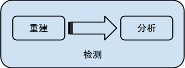
重建
重建是指GFW从网络上监听过往的IP包，然后分析其中的TCP协议，最后重建出一个完整的字节流。分析是在这个重建的字节流上分析具体的应用协议，比如HTTP协议。然后在应用协议中查找是不是有不和谐的内容，然后决定采用何种应对方式。
所以，GFW机器检测的第一步就是重建出一个字节流。那么GFW是如何拿到原始的IP包的呢？真正的GFW部署方式，外人根本无从得知。据猜测，GFW是部署在国家的出口路由器的旁路上，用“分光”的方式把IP包复制一份到另外一根光纤上，从而拿到所有进出国境的IP包。下图引在gfwrev.blogspot.com：
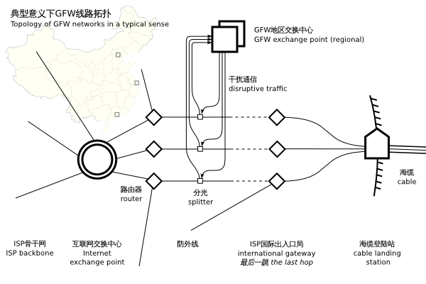
但是Google在北京有自己的机房。所以聪明的网友就使用Google的北京机房提供的GAE服务，用Goagent软件达到高速翻墙的目的。但是有网友证实（https://twitter.com/chengr28/status/260970749190365184），即便是北京的机房也会被骨干网丢包。事实上Google在北京的谷翔机房有一个独立的AS（BGP的概念）。这个AS与谷歌总部有一条IPV6的直连线路，所以通过这个机房可以用IPV6不受墙的限制出去。但是这个AS无论是连接国内还是国外都是要经过GFW的。所以机房在北京也不能保证国内访问不被墙。GFW通过配置骨干网的BGP路由规则，是可以让国内的机房也经过它的。另外一个例子是当我们访问被封的网站触发连接重置的时候，往往收到两个RST包，但是TTL不同。还有一个例子是对于被封的IP，访问的IP包还没有到达国际出口就已经被丢弃。所以GFW应该在其他地方也部署有设备，据推测是在省级骨干路由的位置。
对于GFW到底在哪这个话题，最近又有国外友人表达了兴趣（https://github.com/mothran/mongol）。笔者在前人的基础上写了一个更完备的探测工具https://github.com/fqrouter/qiang。其原理是基于一个IP协议的特性叫TTL。TTL是Time to Live的简写。IP包在没经过一次路由的时候，路由器都会把IP包的TTL减去1。如果TTL到零了，路由器就不会再把IP包发给下一级路由。然后我们知道GFW会在监听到不和谐的IP包之后发回RST包来重置TCP连接。那么通过设置不同的TTL就可以知道从你的电脑，到GFW之间经过了几个路由器。比如说TTL设置成9不触发RST，但是10就触发RST，那么到GFW就是经过了10个路由器。另外一个IP协议的特性是当TTL耗尽的时候，路由器应该发回一个TTL EXCEEDED的ICMP包，并把自己的IP地址设置成SRC（来源）。结合这两点，就可以探测出IP包是到了IP地址为什么的路由器之后才被GFW检测到。有了IP地址之后，再结合IP地址地理位置的数据库就可以知道其地理位置。据说，得出的位置大概是这样的：
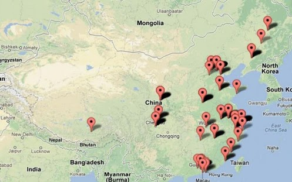
但是这里检测出来的IP到底是GFW的还是骨干路由器的？更有可能的是骨干路由器的IP。GFW做为一个设备用“分光”的方式挂在主干路由器旁边做入侵检测。无论如何，GFW通过某种神奇的方式，可以拿到你和国外服务器之间来往的所有的IP包，这点是肯定的。更严谨的理论研究有：Internet Censorship in China: Where Does the Filtering Occur?
GFW在拥有了这些IP包之后，要做一个艰难的决定，那就是到底要不要让你和服务器之间的通信继续下去。GFW不能太过于激进，毕竟全国性的不能访问国外的网站是违反GFW自身存在价值的。GFW就需要在理解了IP包背后代表的含义之后，再来决定是不是可以安全的阻断你和国外服务器之间的连接。这种理解就要建立了前面说的“重建”这一步的基础上。大概用图表达一下重建是在怎么一回事：
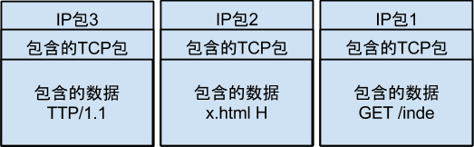
重建需要做的事情就是把IP包1中的GET /inde和IP包2中的x.html H和IP包3中的TTP/1.1拼到一起变成GET /index.html HTTP/1.1。拼出来的数据可能是纯文本的，也可能是二进制加密的协议内容。具体是什么是你和服务器之间约定好的。GFW做为窃听者需要猜测才知道你们俩之间的交谈内容。对于HTTP协议就非常容易猜测了，因为HTTP的协议是标准化的，而且是未加密的。所以GFW可以在重建之后很容易的知道，你使用了HTTP协议，访问的是什么网站。
重建这样的字节流有一个难点是如何处理巨大的流量？这个问题在这篇博客（http://gfwrev.blogspot.tw/2010/02/gfw.html）中已经讲得很明白了。其原理与网站的负载均衡器一样。对于给定的来源和目标，使用一个HASH算法取得一个节点值，然后把所有符合这个来源和目标的流量都往这个节点发。所以在一个节点上就可以重建一个TCP会话的单向字节流。
最后为了讨论完整，再提两点。虽然GFW的重建发生在旁路上是基于分光来实现的，但并不代表整个GFW的所有设备都在旁路。后面会提到有一些GFW应对形式必须是把一些GFW的设备部署在了主干路由上，比如对Google的HTTPS的间歇性丢包，也就是GFW是要参与部分IP的路由工作的。另外一点是，重建是单向的TCP流，也就是GFW根本不在乎双向的对话内容，它只根据监听到的一个方向的内容然后做判断。但是监听本身是双向的，也就是无论是从国内发到国外，还是从国外发到国内，都会被重建然后加以分析。所以一个TCP连接对于GFW来说会被重建成两个字节流。具体的证据会在后面谈如何直穿GFW中详细讲解。
分析
分析是GFW在重建出字节流之后要做的第二步。对于重建来说，GFW主要处理IP协议，以及上一层的TCP和UDP协议就可以了。但是对于分析来说，GFW就需要理解各种各样的应用层的稀奇古怪的协议了。甚至，我们也可以自己发明新的协议。
总的来说，GFW做协议分析有两个相似，但是不同的目的。第一个目的是防止不和谐内容的传播，比如说使用Google搜索了“不该”搜索的关键字。第二个目的是防止使用翻墙工具绕过GFW的审查。下面列举一些已知的GFW能够处理的协议。
对于GFW具体是怎么达到目的一，也就是防止不和谐内容传播的就牵涉到对HTTP协议和DNS协议等几个协议的明文审查。大体的做法是这样的。
像HTTP这样的协议会有非常明显的特征供检测，所以第一步就没什么好说的了。当GFW发现了包是HTTP的包之后就会按照HTTP的协议规则拆包。这个拆包过程是GFW按照它对于协议的理解来做的。比如说，从HTTP的GET请求中取得请求的URL。然后GFW拿到这个请求的URL去与关键字做匹配，比如查找Twitter是否在请求的URL中。为什么有拆包这个过程？首先，拆包之后可以更精确的打击，防止误杀。另外可能预先做拆包，比全文匹配更节省资源。其次，xiaoxia和liruqi同学的jjproxy的核心就是基于GFW的一个HTTP拆包的漏洞，当然这个bug已经被修复了。其原理就是GFW在拆解HTTP包的时候没有处理有多出来的\r\n这样的情况，但是你访问的google.com却可以正确处理额外的\r\n的情况。从这个例子中可以证明，GFW还是先去理解协议，然后才做关键字匹配的。关键字匹配应该就是使用了一些高效的正则表达式算法，没有什么可以讨论的。
HTTP代理和SOCKS代理，这两种明文的代理都可以被GFW识别。之前笔者认为GFW可以在识别到HTTP代理和SOCKS代理之后，再拆解其内部的HTTP协议的正文。也就是做两次拆包。但是分析发现，HTTP代理的关键字列表和HTTP的关键字列表是不一样的，所以笔者现在认为HTTP代理协议和SOCKS代理协议是当作单独的协议来处理的，并不是拆出载荷的HTTP请求再进行分析的。
目前已知的GFW会做的协议分析如下：
DNS 查询
GFW可以分析53端口的UDP协议的DNS查询。如果查询的域名匹配关键字则会被DNS劫持。可以肯定的是，这个匹配过程使用的是类似正则的机制，而不仅仅是一个黑名单，因为子域名实在太多了。证据是：2012年11月9日下午3点半开始，防火长城对Google的泛域名 .google.com 进行了大面积的污染，所有以 .google.com 结尾的域名均遭到污染而解析错误不能正常访问，其中甚至包括不存在的域名（来源http://zh.wikipedia.org/wiki/%E5%9F%9F%E5%90%8D%E5%8A%AB%E6%8C%81）
目前为止53端口之外的查询也没有被劫持。但是TCP的DNS查询已经可以被TCP RST切断了，表明了GFW具有这样的能力，只是不屑于大规模部署。而且TCP查询的关键字比UDP劫持的域名要少的多。目前只有dl.dropbox.com会触发TCP RST。相关的研究论文有：
HTTP 请求
GFW可以识别出HTTP协议，并且检查GET的URL与HOST。如果匹配了关键字则会触发TCP RST阻断。前面提到了jjproxy使用的构造特殊的HTTP GET请求欺骗GFW的做法已经失效，现在GFW只要看到\r\n就直接TCP RST阻断了（来源https://plus.google.com/u/0/108661470402896863593/posts/6U6Q492M3yY）。相关的研究论文有：
- The Great Firewall Revealed
- Ignoring the Great Firewall of China
- HTTP URL/深度关键字检测
- ConceptDoppler: A Weather Tracker for Internet Censorship
HTTP 响应
GFW除了会分析上行的HTTP GET请求，对于HTTP返回的内容也会做全文关键字检查。这种检查与对请求的关键字检查不是由同一设备完成的，而且对GFW的资源消耗也更大。相关的研究论文有：
HTTP代理协议
TODO
SOCKS4/5代理协议
TODO
SMTP 协议
因为有很多翻墙软件都是以邮件索取下载地址的方式发布的，所以GFW有针对性的封锁了SMTP协议，阻止这样的邮件往来。
封锁有三种表现方式（http://fqrouter.tumblr.com/post/43400982633/gfw-smtp），简单概要的说就是看邮件是不是发往上了黑名单的邮件地址的（比如xiazai@upup.info就是一个上了黑名单的邮件地址），如果发现了就立马用TCP RST包切断连接。
电驴(ed2k)协议
GFW还会过滤电驴（ed2k）协议中的查询内容。因为ed2k还有一个混淆模式，会加密往来的数据包，GFW会切断所有使用混淆模式的ed2k连接，迫使客户端使用明文与服务器通讯（http://fqrouter.tumblr.com/post/43490772120/gfw-ed2k）。然后如果客户端发起了搜索请求，查找的关键字中包含敏感词的话就会被用TCP RST包切断连接。
对翻墙流量的分析识别
GFW的第二个目的是封杀翻墙软件。为了达到这个目的GFW采取的手段更加暴力。原因简单，对于HTTP协议的封杀如果做不好会影响互联网的正常运作，GFW与互联网是共生的关系，它不会做威胁自己存在的事情。但是对于TOR这样的几乎纯粹是为翻墙而存在的协议，只要检测出来就是格杀勿论的了。GFW具体是如何封杀各种翻墙协议的，我也不是很清楚，事态仍然在不断更新中。但是举两个例子来证明GFW的高超技术。
第一个例子是GFW对TOR的自动封杀，体现了GFW尽最大努力去理解协议本身。根据这篇博客（https://blog.torproject.org/blog/knock-knock-knockin-bridges-doors）。使用中国的IP去连接一个美国的TOR网桥，会被GFW发现。然后GFW回头（15分钟之后）会亲自假装成客户端，用TOR的协议去连接那个网桥。如果确认是TOR的网桥，则会封当时的那个端口。换了端口之后，可以用一段时间，然后又会被封。这表现出了GFW对于协议的高超检测能力，可以从国际出口的流量中敏锐地发现你连接的TOR网桥。据TOR的同志说是因为TOR协议中的握手过程具有太明显的特征了。另外一点就表现了GFW的不辞辛劳，居然会自己伪装成客户端过去连连看。
第二个例子表现了GFW根本不在乎加密的流量中的具体内容是不是有敏感词。只要疑似翻墙，特别是提供商业服务给多个翻墙，就会被封杀。根据这个帖子（http://www.v2ex.com/t/55531），使用的ShadowSocks协议。预先部署密钥，没有明显的握手过程仍然被封。据说是GFW已经升级为能够机器识别出哪些加密的流量是疑似翻墙服务的。
关于GFW是如何识别与封锁翻墙服务器的，最近写了一篇文章提出我的猜想，大家可以去看看：http://fqrouter.tumblr.com/post/45969604783/gfw。
最近发现GFW对OpenVPN和SSL证书已经可以做到准实时的封IP（端口）。原理应该是离线做的深包分析，然后提取出可疑的IP列表，经过人工确认之后封IP。因为OpenVPN有显著的协议的特征，而且基本不用于商业场景所以很容易确认是翻墙服务。但是SSL也就是HTTPS用的加密协议也能基于“证书”做过滤不得不令人感到敬畏了。Shadowsocks的作者Clowwindy为此专门撰文“为什么不应该用SSL翻墙“：https://gist.github.com/clowwindy/5947691。
总结起来就是，GFW已经基本上完成了目的一的所有工作。明文的协议从HTTP到SMTP都可以分析然后关键字检测，甚至电驴这样不是那么大众的协议GFW都去搞了。从原理上来说也没有什么好研究的，就是明文，拆包，关键字。GFW显然近期的工作重心在分析网络流量上，从中识别出哪些是翻墙的流量。这方面的研究还比较少，而且一个显著的特征是自己用没关系，大规模部署就容易出问题。我目前没有在GFW是如何封翻墙工具上有太多研究，只能是道听途说了。
应对
GFW的应对措施是三步中最明显的，因为它最直接。GFW的重建过程和协议分析的过程需要耐心的试探才能大概推测出GFW是怎么实现的。但是GFW的应对手段我们每天都可以见到，比如连接重置。GFW的应对目前可以感受到的只有一个目的就是阻断。但是从广义上来说，应对方式应该不限于阻断。比如说记录下日志，然后做统计分析，秋后算账什么的也可以算是一种应对。就阻断方式而言，其实并不多，那么我们一个个来列举吧。
封IP
一般常见于人工检测之后的应对。还没有听说有什么方式可以直接使得GFW的机器检测直接封IP。一般常见的现象是GFW机器检测，然后用TCP RST重置来应对。过了一段时间才会被封IP，而且没有明显的时间规律。所以我的推测是，全局性的封IP应该是一种需要人工介入的。注意我强调了全局性的封IP，与之相对的是部分封IP，比如只对你访问那个IP封个3分钟，但是别人还是可以访问这样的。这是一种完全不同的封锁方式，虽然现象差不多，都是ping也ping不通。要观摩的话ping twitter.com就可以了，都封了好久了。
其实现方式是把无效的路由黑洞加入到主干路由器的路由表中，然后让这些主干网上的路由器去帮GFW把到指定IP的包给丢弃掉。路由器的路由表是动态更新的，使用的协议是BGP协议。GFW只需要维护一个被封的IP列表，然后用BGP协议广播出去就好了。然后国内主干网上的路由器都好像变成了GFW的一份子那样，成为了帮凶。
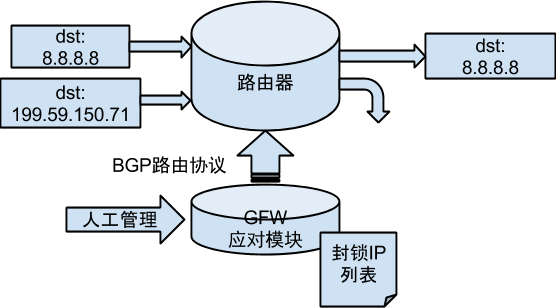
如果我们使用traceroute去检查这种被全局封锁的IP就可以发现，IP包还没有到GFW所在的国际出口就已经被电信或者联通的路由器给丢弃了。这就是BGP广播的作用了。
DNS劫持
这也是一种常见的人工检测之后的应对。人工发现一个不和谐网站，然后就把这个网站的域名给加到劫持列表中。其原理是基于DNS与IP协议的弱点，DNS与IP这两个协议都不验证服务器的权威性，而且DNS客户端会盲目地相信第一个收到的答案。所以你去查询facebook.com的话，GFW只要在正确的答案被返回之前抢答了，然后伪装成你查询的DNS服务器向你发错误的答案就可以了。
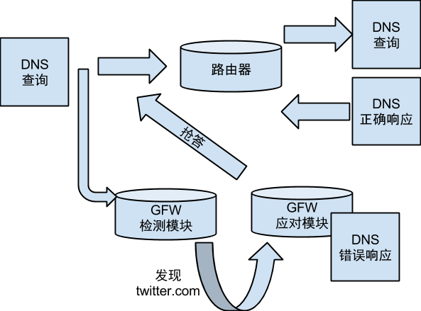
TCP RST阻断
TCP协议规定，只要看到RST包，连接立马被中断。从浏览器里来看就是连接已经被重置。我想对于这个错误大家都不陌生。据我个人观感，这种封锁方式是GFW目前的主要应对手段。大部分的RST是条件触发的，比如URL中包含某些关键字。目前享受这种待遇的网站就多得去了，著名的有facebook。还有一些网站，会被无条件RST。也就是针对特定的IP和端口，无论包的内容就会触发RST。比较著名的例子是https的wikipedia。GFW在TCP层的应对是利用了IPv4协议的弱点，也就是只要你在网络上，就假装成任何人发包。所以GFW可以很轻易地让你相信RST确实是Google发的，而让Google相信RST是你发的
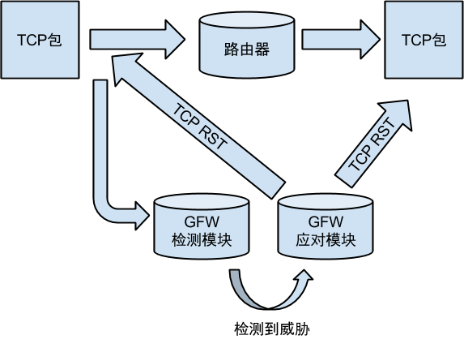
封端口
GFW除了自身主体是挂在骨干路由器旁路上的入侵检测设备，利用分光技术从这个骨干路由器抓包下来做入侵检测 (所谓 IDS)，除此之外这个路由器还会被用来封端口 (所谓 IPS)。GFW在检测到入侵之后可以不仅仅可以用TCP RST阻断当前这个连接，而且利用骨干路由器还可以对指定的IP或者端口进行从封端口到封IP，设置选择性丢包的各种封禁措施。可以理解为骨干路由器上具有了类似“iptables”的能力（网络层和传输层的实时拆包，匹配规则的能力）。这个iptables的能力在CISCO路由器上叫做ACL Based Forwarding (ABF)。而且规则的部署是全国同步的，一台路由器封了你的端口，全国的挂了GFW的骨干路由器都会封。一般这种封端口都是针对翻墙服务器的，如果检测到服务器是用SSH或者VPN等方式提供翻墙服务。GFW会在全国的出口骨干路由上部署这样的一条ACL规则，来封你这个服务器+端口的下行数据包。也就是如果包是从国外发向国内的，而且src（源ip）是被封的服务器ip，sport（源端口）是被封的端口，那么这个包就会被过滤掉。这样部署的规则的特点是，上行的数据包是可以被服务器收到的，而下行的数据包会被过滤掉。
如果被封端口之后服务器采取更换端口的应对措施，很快会再次被封。而且多次尝试之后会被封IP。初步推断是，封端口不是GFW的自动应对行为，而是采取黑名单加人工过滤地方式实现的。一个推断的理由就是网友报道，封端口都是发生在白天工作时间。
在进入了封端口阶段之后，还会有继发性的临时性封其他端口的现象，但是这些继发性的封锁具有明显的超时时间，触发了之后（触发条件不是非常明确）会立即被封锁，然后过了一段时间就自动解封。目前对于这一波封SSH/OPENVPN采用的以封端口为明显特征的封锁方式研究尚不深入。可以参考我最近写的一篇文章：http://fqrouter.tumblr.com/post/45969604783/gfw
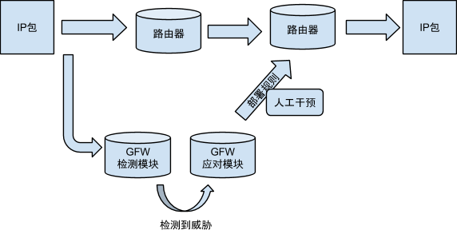
HTTPS间歇性丢包
对于Google的HTTPS服务，GFW不愿意让其完全不能访问。所以采取的办法是对于Google的某些IP的443端口采取间歇性丢包的措施。最明显的ip段是国内解析google域名常见的74.125.128.*。其原理应该类似于封端口，是在骨干路由器上做的丢包动作。但是触发条件并不只是看IP和端口，加上了时间间隔这样一个条件。
翻墙原理
前面从原理上讲解了GFW的运作原理。翻墙的原理与之相对应，分为两大类。第一类是大家普遍的使用的绕道的方式。IP包经由第三方中转已加密的形式通过GFW的检查。这样的一种做法更像“翻”墙，是从墙外绕过去的。第二类是找出GFW检测过程的中一些BUG，利用这些BUG让GFW无法知道准确的会话内容从而放行。这种做法更像“穿”墙。曾经引起一时轰动的西厢计划第一季就是基于这种方式的实现。
基于绕道法的翻墙方式无论是VPN还是SOCKS代理，原理都是类似的。都是以国外有一个代理服务器为前提，然后你与代理服务器通信，代理服务器再与目标服务器通信。
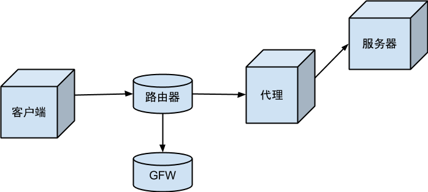
绕道法对于IP封锁来说，因为最终的IP包是由代理服务器在墙外发出的，所以国内骨干路由封IP并不会产生影响。对于TCP重置来说，因为TCP重置是以入侵检测为前提的，客户端与代理之间的加密通信规避了入侵检测，使得TCP重置不会被触发。
但是对于反DNS污染来说，VPN和SOCKS代理却有不同。基于VPN的翻墙方法，得到正确的DNS解析的结果需要设置一个国外的没有被污染的DNS服务器。然后发UDP请求去解析域名的时候，VPN会用绕道的方式让UDP请求不被劫持地通过GFW。
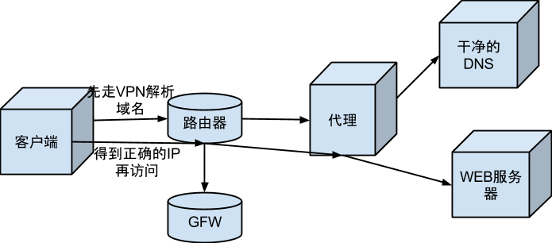
但是SOCKS代理和HTTP代理这些更上层的代理协议则可以选择不同的方式。因为代理与应用之间有更紧密的关系，应用程序比如浏览器可以把要访问的服务器的域名直接告诉本地的代理。然后SOCKS代理可以选择不在本地做解析，直接把请求发给墙外的代理服务器。在代理服务器去与目标服务器做连接的时候再在代理服务器上做DNS解析，从而避开了GFW的DNS劫持。
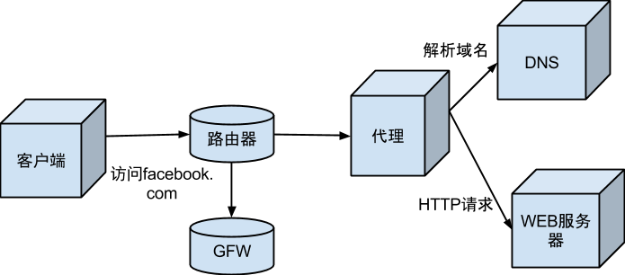
VPN与SOCKS代理的另外一个主要区别是应用程序是如何使用上代理去访问国外的服务器的。先来看不加代理的时候，应用程序是如何访问网络的。
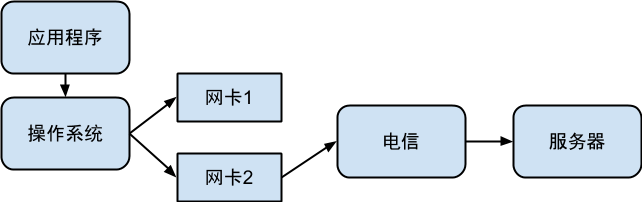
应用程序把IP包交给操作系统，操作系统会去决定把包用机器上的哪块网卡发出去。VPN的客户端对于操作系统来说就是一个虚拟出来的网卡。应用程序完全不用知道VPN客户端的存在，操作系统甚至也不需要区分VPN客户端与普通网卡的区别。
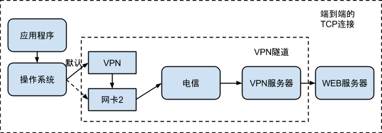
VPN客户端在启动之后会把操作系统的缺省路由改成自己。这样所有的IP包都会经由这块虚拟的网卡发出去。这样VPN就能够再打包成加密的流量发出去（当然线路还是之前的电信线路），发回去的加密流量再解密拆包交还给操作系统。
SOCKS代理等应用层的代理则不同。其流量走不走代理的线路并不是由操作系统使用路由表选择网卡来决定的，而是在应用程序里自己做的。也就是说，对于操作系统来说，使用SOCKS代理的TCP连接和不使用SOCKS代理的TCP连接并没有任何的不同。应用程序自己去选择是直接与目标服务器建立连接，还是与SOCKS代理服务器建立TCP连接，然后由SOCKS代理服务器去建立第二个TCP连接，两个TCP连接的数据由代理服务器中转。
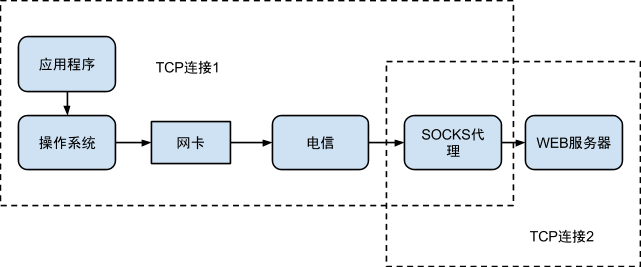
关于VPN/SOCKS代理，可以参见我博客上的文章： http://fqrouter.tumblr.com/post/51474945203/socks-vpn
绕道法的翻墙原理就是这些了，相对来说非常简单。其针对的都是GFW的分析那一步，通过加密使得GFW无法分析出流量的原文从而让GFW放行。但是GFW最近的升级表明，GFW虽然无法解密这些加密的流量，但是GFW可以结合流量与其他协议特征探测出这些流量是不是“翻墙”的，然后就直接暴力的切断。绕道法的下一步发展就是要从原理弄明白，GFW是如何分析出翻墙流量的，从而要么降低自身的流量特征避免上短名单被协议分析，或者通过混淆协议把自己伪装成其他的无害流量。
穿墙原理
实验环境准备
穿墙比翻墙要复杂得多，但也有意思得多。本章节以实验为主。实验的设备是家庭用的路由器，我用的是水星4530R。需要有公网IP。刷的操作系统是OpenWRT Attitude Adjustment 12.09 rc-1版本。使用的包有：
- NetfilterQueue（https://github.com/fqrouter/fqrouter 中有）
- bind-dig
- shadow
- dpkt （不是OpenWRT的包，是python的 http://dpkt.googlecode.com/files/dpkt-1.7.tar.gz ）
本文并不打算详细讲解实验环境的设置。对于有OpenWRT编译和刷机经验的朋友可能可以按照我的叙述重建出实验环境来。整个实验的关键在于
- 公网上的ip地址
- Linux
- python
- python访问netfilter queue的库
如果你有一台公网上的Linux机器，安装了Python和Python的NetfilterQueue，也可以进行同样的实验。
如果你使用的是路由器，需要验证你有公网ip。这个可以访问ifconfig.me来证实。其次要保证路由器是OpenWRT的并且有足够的空间安装python-mini。到这里基本上都和普通的OpenWRT刷机没有什么两样。重点在于：
安装Python的NetfilterQueue
OpenWRT提供了NetfilterQueue的C的库。但是使用C来做实验太笨重了。所以我选择了Python。但是Python的NetfilterQueue的库没有在OpenWRT中。下载https://github.com/fqrouter/fqrouter 解压后可以得到一个名字叫fqrouter的目录。然后给feeds.conf添加一行src-link fqrouter /opt/fqrouter/package。把/opt/fqrouter替换为你解压的目录。然后scripts/feeds update -a，再执行scripts/feeds install python-netfilterqueue就添加好了。然后在make menuconfig中选择Languages=>Python=>python-netfilterqueue。
有了这个库就赋予了我们使用Python任意抓包，修改包和发包的能力。在OpenWRT上，除了python没有第二种脚本语言可以如此简单地获得这些能力。
安装Python的dpkt
能够抓取和发送IP包之后，第二个头疼的问题是如何解析和构造任意的IP包。Python有一个库叫dpkt可以帮我们很好地完成这项任务。这是我们选择Python做实验的第二个重要理由。
后面的内容主要是实验，具体可见原文档地址